# Navigating Berlin's Open Data Landscape ### 27.08.2019, Victoria Dykes (<a href="https://twitter.com/toridykes" target="blank">@toridykes)</a>
## Slides & Questions These slides will be available online at: <br> https://technologiestiftung.github.io/citylab-slides/open-data-landscape <br> Feel free to ask specific, targeted questions during the talk. Otherwise, there will be an open Q&A at the end.
## Agenda - Technologiestiftung, ODIS & CityLAB - Intro to Open Data - What is Open Data? - Open Data in Berlin - Sources of Open Data in Berlin - Open Discussion
## Organizational Overview <center> </center> **** <center></center>
## The Role of ODIS - Technical assistance for government employees - Networking inside and outside of the government - Developing open data-based visualizations, applications and prototypes
## What is Open (Government) Data? * Machine-readable (CSV, JSON, XLSX, etc.) * Open format (CSV vs. XLSX) * Freely available & accessible * Openly licensed (CC0, CC-BY)
## Why should governments publish their data? * Increase value & potential of their data * Promote economic development * Potential for social good * Create a more informed citizenry * Our taxes have already paid for this data
## Open Data Milestones in Berlin * Open Data Strategy: **2012** * Open Data Portal: **2012** * E-Government Law: **2016** * Secondary Legislation (Rechtsverordnung): **Pending**
## Management of Open Data in Berlin Data management is a heavily **decentralized** task in Berlin. ###### . Individual Bezirke as well as individual government departments / offices are responsible for managing and publishing their data.
## Sources of Open Data in Berlin - Open Data Portal (**Single point** of reference) - FIS-Broker (**Geospatial** data) - Amt für Statistik Berlin Brandenburg (**Statistical** data) - GSI Portal (**Health** and **social services** data)
## Berlin Open Data Portal https://daten.berlin.de - 2000+ Datasets - *Metadata* Portal – only links - Harvests data from Amt für Statistik, FIS-Broker - All types of data (statistical, geospatial, etc) - Mostly individual files (few APIs) 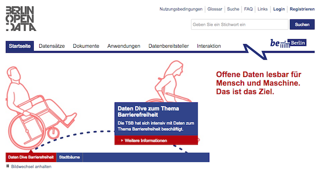
## Berlin Open Data Portal ### Dataset: Station Entrance Coordinates [Link](https://daten.berlin.de/datensaetze/koordinaten-der-zugangsm%C3%B6glichkeiten-zu-stationen-0) 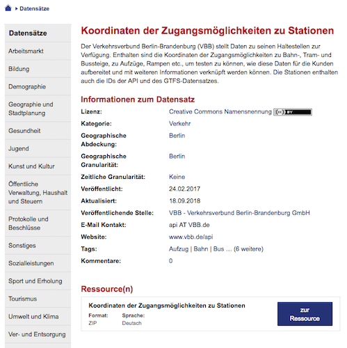
## Berlin Open Data Portal ### Dataset: Street Festivals & Fairs in Berlin [Link](https://daten.berlin.de/datensaetze/berliner-stra%C3%9Fen-und-volksfeste-2019) 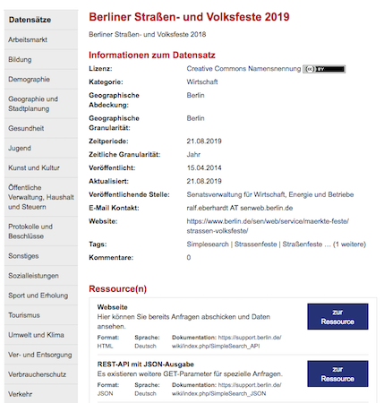
## Berlin Open Data Portal ### Dataset: E-Charging Stations [Link](https://daten.berlin.de/datensaetze/lades%C3%A4ulen-im-%C3%B6ffentlichen-und-halb%C3%B6ffentlichen-raum) 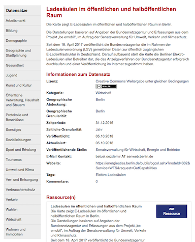
## Berlin Open Data Portal ### General tips: - If you encounter a broken link, please report it! - Contact form: https://daten.berlin.de/contact - In case of errors or unclear data: reach out to the contact person ###### . 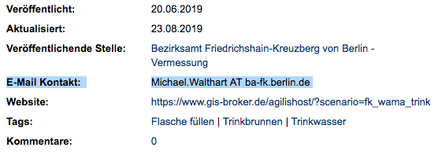
## Berlin Open Data Portal ### Limitations: - Individual years / other time intervals often uploaded individually - In some cases: individual Bezirke upload individual datasets - Possibility for broken links - Search function can be challenging - Does not completely cover other data sources
## FIS-Broker https://fbinter.stadt-berlin.de/fb/index.jsp - 500+ Datasets - Geospatial data for Berlin - Data provided as WMS (rendered maps) or WFS (raw data) 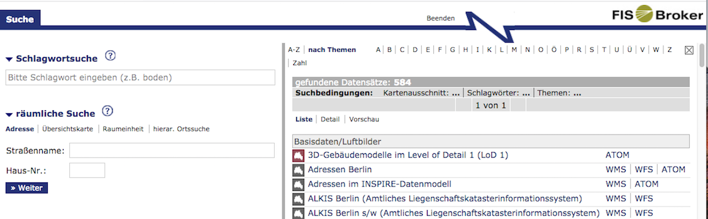
## FIS-Broker ### Dataset: Land Usage (2015) [Link](https://fbinter.stadt-berlin.de/fb/index.jsp?loginkey=zoomStart&mapId=k06_01_1realnutz2015@senstadt&bbox=388545,5818256,393925,5821197) 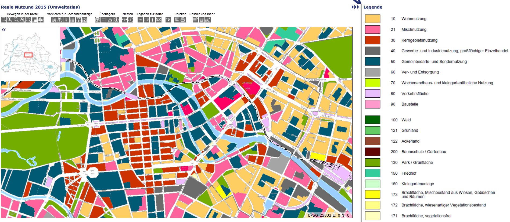
## FIS-Broker ### Dataset: Street Survey (2014) [Link](https://fbinter.stadt-berlin.de/fb/index.jsp?loginkey=zoomStart&mapId=k_StraDa@senstadt&bbox=385587,5818190,396604,5824214) 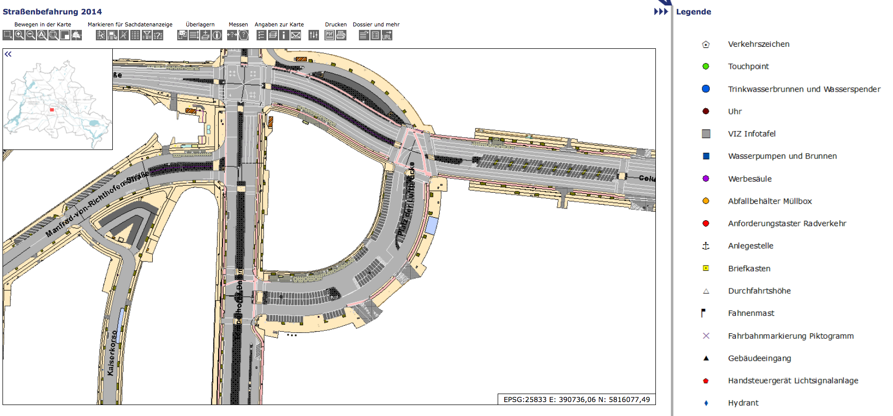
## FIS-Broker ### Dataset: Parks & Public Playgrounds [Link](https://fbinter.stadt-berlin.de/fb/index.jsp?loginkey=zoomStart&mapId=gris_oeffgruen@senstadt&bbox=390706,5819815,392586,5820843) 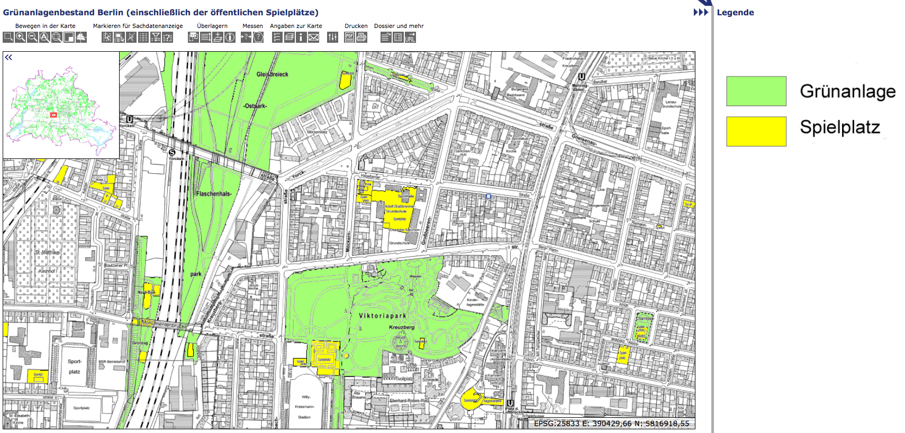
## FIS-Broker ### Downloading from the FIS-Broker: How-to guide: https://lab.technologiestiftung-berlin.de/projects/fisbroker-to-qgis/en/
## FIS-Broker ### Limitations: - Challenging interface - No ability to export/download data as GeoJSON, Shapefile, etc.
## Amt für Statistik Berlin Brandenburg https://www.statistik-berlin-brandenburg.de/ - Statistical authority for Berlin & Brandenburg - Variety of data on populations, economic indicators, etc. - Data provided as Excel or CSV 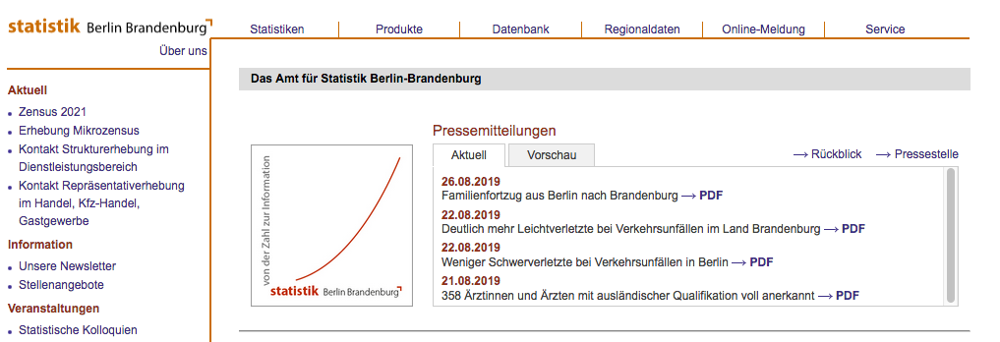
## Amt für Statistik Berlin Brandenburg ### Database: Microcensus [Link](https://www.statistik-berlin-brandenburg.de/webapi/opendatabase?id=BBBMZE) 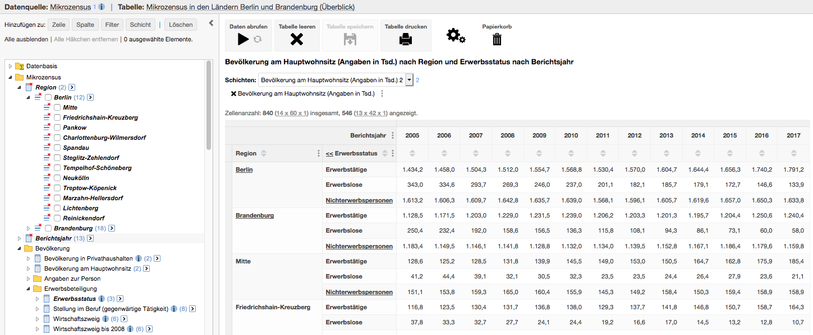
## Amt für Statistik Berlin Brandenburg ### Database: Universities [Link](https://www.statistik-berlin-brandenburg.de/webapi/opendatabase?id=BBB_STS) 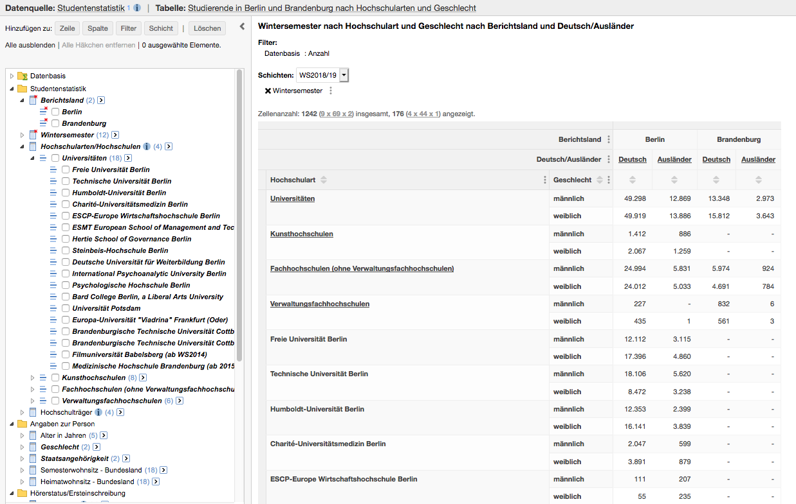
## Amt für Statistik Berlin Brandenburg ### Database: Tourism [Link](https://www.statistik-berlin-brandenburg.de/webapi/opendatabase?id=BBBTOURA) 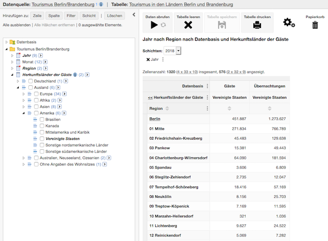
## Amt für Statistik Berlin Brandenburg ### Relevant article: Berlin's spatial units Guide to understanding various ways Berlin can be divided https://lab.technologiestiftung-berlin.de/projects/spatial-units/en/
## Amt für Statistik Berlin Brandenburg ### Limitations: - Most-granular data (e.g. Bezirksregion, Planungsraum) not always available as open data - No public APIs
## GSI Portal http://www.gsi-berlin.info/ - Data from two Berlin government departments: - Senate Department for Integration, Labor and Social Affairs - Senate Department for Health, Care Services, and Equality - Data on health- or healthcare-related topics & social services - Data provided as Excel files 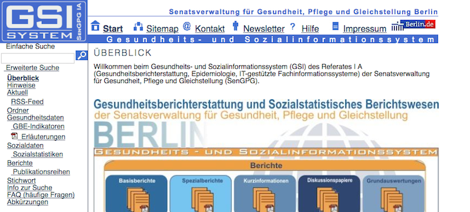
## GSI Portal ### Datasets: Vaccination [Link](http://www.gsi-berlin.info/gsi_suchen.asp?seite=2&CBFest=Kategorie,Bereich,Thema,Unterthema&kategorie=Gesundheitsdaten&bereich=Gesundheitszustand+der+Bev%F6lkerung&thema=Gesundheitszustand+von+Vorschulkindern&unterthema=Impfungen) 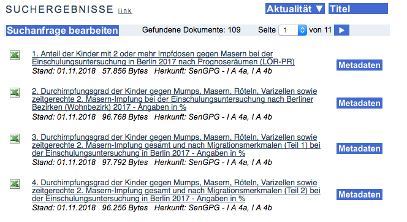
## GSI Portal ### Datasets: School Entry Heath Examinations [Link](http://www.gsi-berlin.info/gsi_suchen.asp?seite=2&CBFest=Kategorie,Bereich,Thema&kategorie=Gesundheitsdaten&bereich=Gesundheitszustand+der+Bev%F6lkerung&thema=Gesundheitszustand+von+Vorschulkindern) 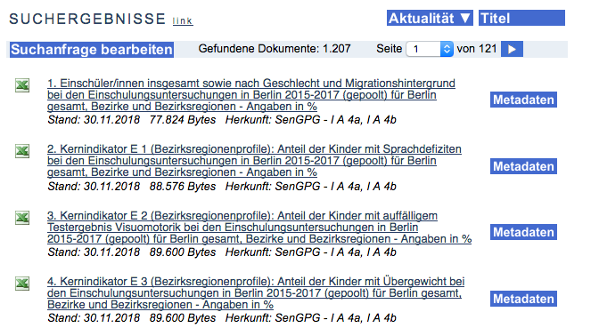
## GSI Portal ### Datasets: Social Assistance [Link](http://www.gsi-berlin.info/gsi_suchen.asp?seite=2&CBFest=Kategorie,Bereich,Thema,Unterthema&kategorie=Sozialdaten&bereich=Sozialgesetzbuch+XII+%2D+SGB+XII%2F+ab+2005&thema=Grundsicherung+%28SGB+XII+4%2E+Kapitel%29&unterthema=Empf%E4nger%2Finnen+und+Bedarfsgemeinschaften) 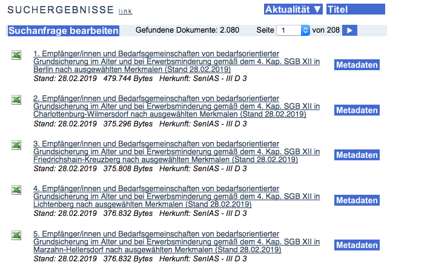
## GSI Portal ### Datasets: Assistance for Asylum Seekers [Link](http://www.gsi-berlin.info/gsi_suchen.asp?seite=2&CBFest=Kategorie,Bereich&kategorie=Sozialdaten&bereich=Asylbewerberleistungsgesetz+%2D+AsylbLG) 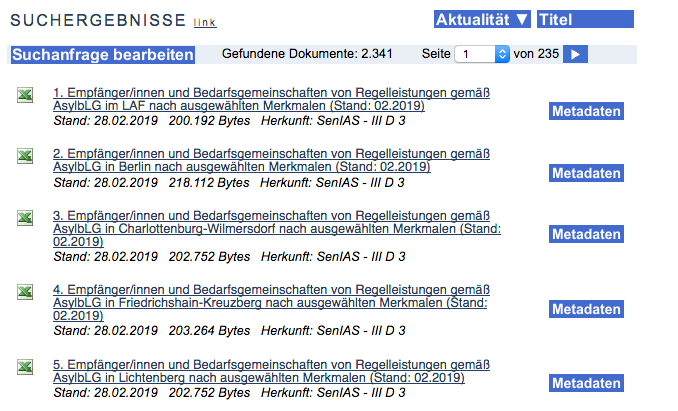
## GSI Portal ### Limitations - Datasets for individual years uploaded as individual entries - Confusing navigation - Datasets can be difficult to understand without specialized knowledge
## Any questions?
## Further Resources Ideation & Protoyping Lab Website: https://lab.technologiestiftung-berlin.de/ <br><br> ODIS Website (will be revamped soon) https://odis-berlin.de/
## Contact: ### ODIS Tori Dykes dykes@technologiestiftung-berlin.de ###### . The ODIS Team odis@technologiestiftung-berlin.de https://odis-berlin.de ###### . <!-- __citylab-berlin.org__ --> ### CityLAB Berlin [@citylabberlin](https://twitter.com/citylabberlin)\ [citylab-berlin.org](https://citylab-berlin.org)